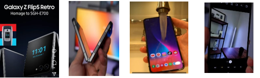

Small Business
REVIEWING THE SAMSUNG Z FLIP PHONE
I am not a tech expert but I would like to give a quick review about the new Samsung z flip phone.I can tell you that Samsung has been known for producing high-quality smartphones with innovative features and sleek designs. They often incorporate advanced camera technology, vibrant displays, and powerful processors into their devices.
The newly improved hinge allows the phone to close fully shut without a gap preventing dust and other foreign particles from going on the screen
The hinge can also be opened at any angle and will hold up that position allowing you to set it at any viewing angle that is comfortable for you
It has an IPS 8 water resistance rating meaning, the phone wont get damaged when it comes into contact with water
The new sharp dragon 8 Gen Z chip in it gives a great performance and great battery life
there is still no IP rating for dust resistance so you need to be careful when at sandy areas, Like the beach.
the camera system is good in most scenarios it's not the best.